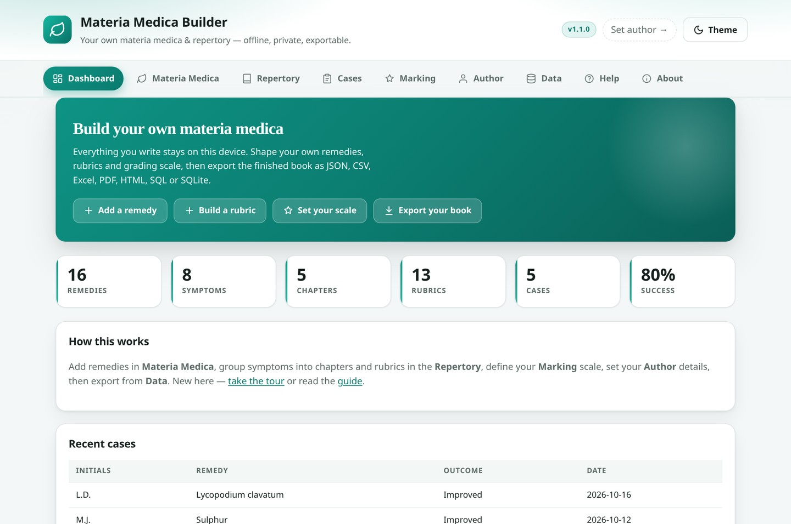
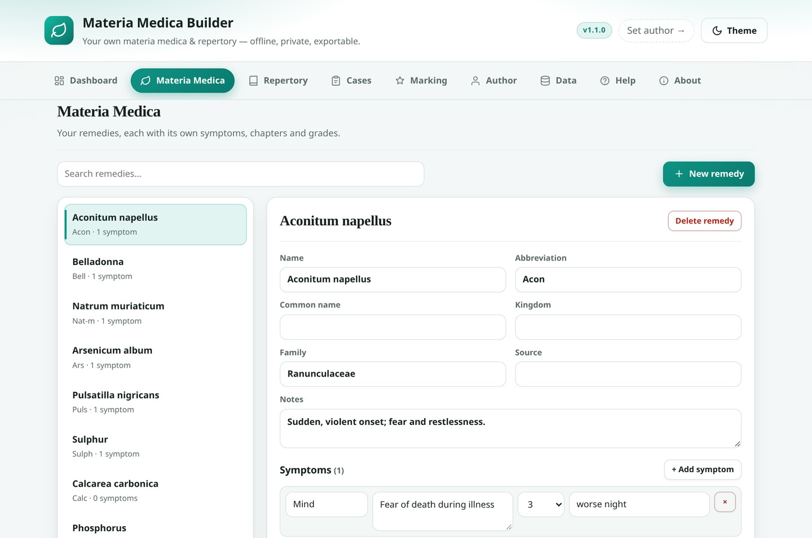
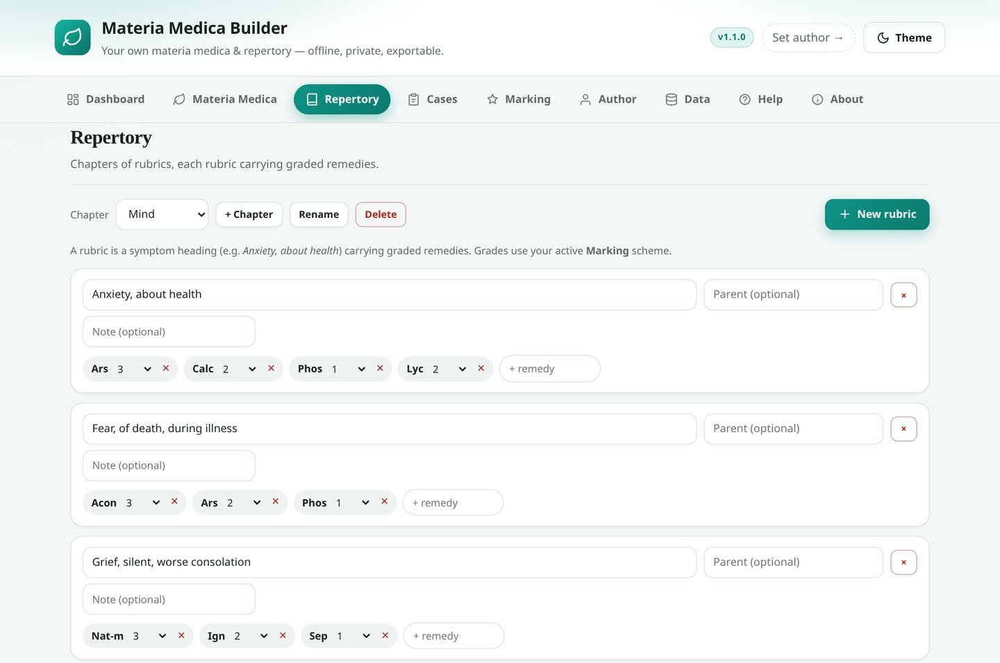
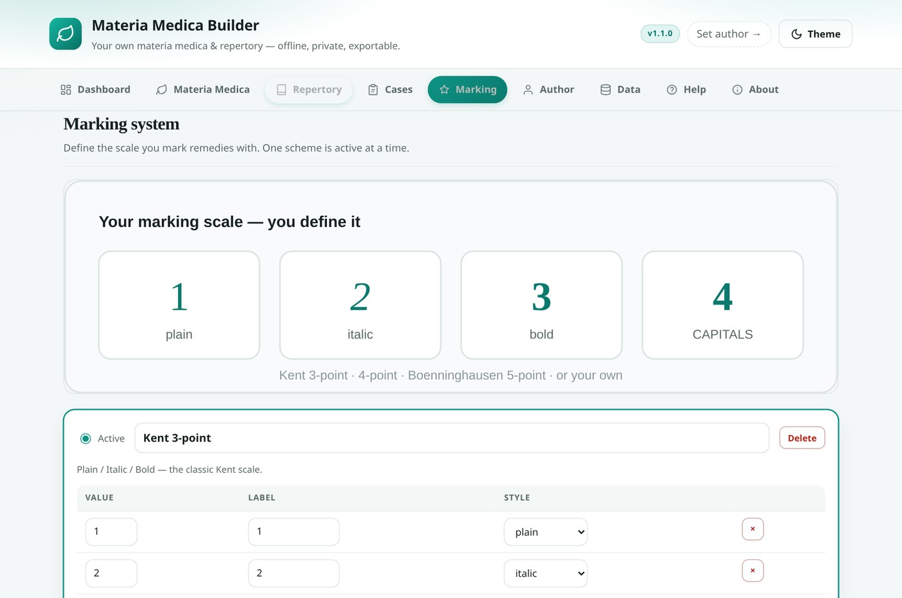
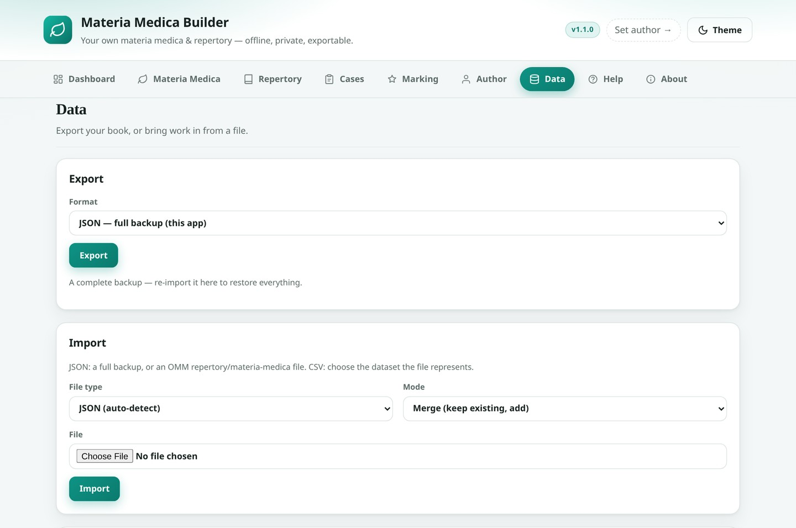
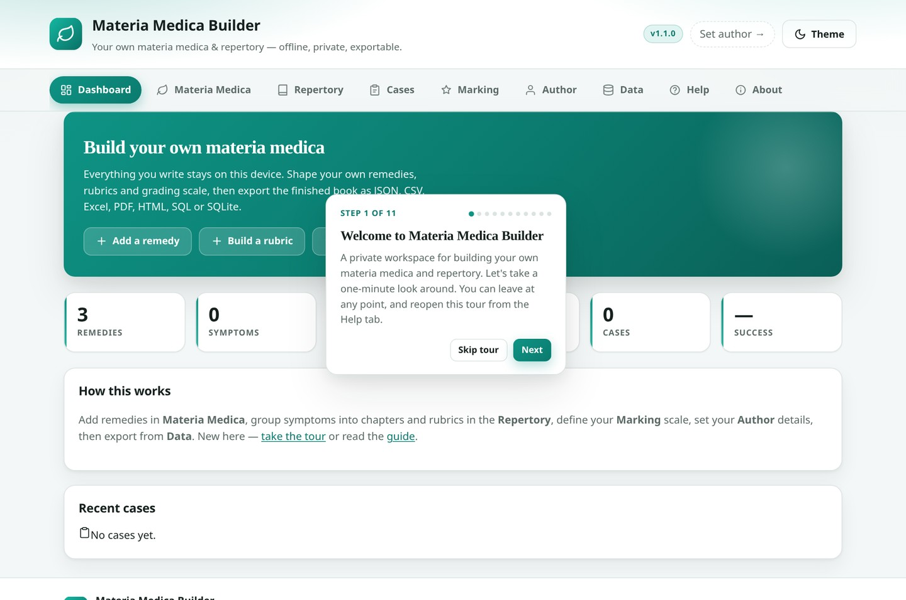

Materia Medica
Remedies with name, abbreviation, common name, kingdom, family, source and notes. Add any number of symptoms to each, with a chapter, grade and modalities.
A precise, tool-like workbench for the practitioner who writes their own book — remedies, symptoms, rubrics and grades defined and edited by hand, kept entirely on your device, and exported in whatever shape you need.
Free & fully offline — nothing to install. The Android .apk is sideload-only (allow installs from unknown sources).


Six working surfaces, one local database. Nothing is templated for you — every remedy, rubric and grade is yours to define.
Remedies with name, abbreviation, common name, kingdom, family, source and notes. Add any number of symptoms to each, with a chapter, grade and modalities.
Chapters (Mind, Head, Stomach…) hold rubrics; rubrics hold graded remedies. Each rubric supports a parent heading and a note, so Morning under Sweat of the feet reads correctly.
Four schemes ship in — Kent 3-point, 4-point with capitals, Boenninghausen 5-point and Simple 0–2 — or define your own: any number of levels, each with a label and a typographic style.
Your name, credentials, clinic, email, website, book title, edition, year, copyright line and licence — stamped into every PDF, HTML file and workbook you export.
A private case logger: record a case and track the outcome across Cured, Improved, No Change, Aggravated and Suppressed — then review the history.
The full how-to guide lives inside the app, alongside a first-run spotlight tour you can replay any time and a print-to-PDF of the guide itself.
The same guide is built into the app — open the Help tab, or press Take the tour.
Open Materia Medica and add your first remedy — or edit the three starters. Give it a short abbreviation like Acon or Nat-m; that is what the repertory displays.
Attach symptoms to a remedy: pick a chapter, write the symptom, set a grade. Modalities carry a direction and text.
Add a chapter, then rubrics inside it. Type a remedy abbreviation and press Enter to attach it, then choose its grade.
Complete your Author details, then open Data and export your book as JSON, CSV, Excel, PDF, HTML, SQL or SQLite.
Every screen below is the real app. Open the live demo — it runs entirely in your browser, no sign-in.






The .xlsx, .pdf and .sqlite files are generated byte-by-byte in JavaScript — no library from a CDN, and no network connection required.
Import accepts a full JSON backup, an OMM repertory or materia-medica file, or CSV — with Merge or Replace mode.
There is no build step and nothing to install. The app is plain HTML, CSS and JavaScript, and the service worker takes it offline automatically.
Deploy anywhere static — GitHub Pages, Netlify, Cloudflare Pages.
IndexedDB. There is no authentication, no cloud, no analytics, and no external requests after load. Your remedies, symptoms, rubrics, cases and any book you compile belong to you..xlsx, a printable PDF book with your author block and copyright, self-contained HTML, portable SQL, and a real SQLite .sqlite database file.schema_version: "1.1", type: "repertory" or "materia_medica", a book provenance block, and sections → rubrics → remedy_table / remedies → symptoms. A repertory built here drops straight into that collection, and a book extracted by the OMM pipeline can be imported here for editing.MateriaMedicaDB database at version 2 and adds the new stores; existing remedies, symptoms and cases are preserved and old symptom fields are migrated automatically.